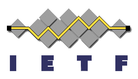
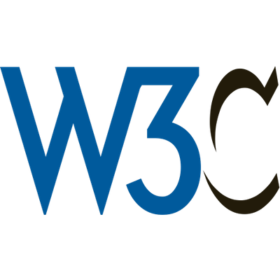

Internet Engineering Task Force
The Internet Engineering Task Force ("IETF") is madeup of volunteers
of network designers, operators, vendors and researchers who work to make
the Internet work better. Their focus is on the Internet's architectural
design and operation.
One of IETF's current intiatives is crearing protocols for the Internet of Things (IoT) to enhance its communication and security. Iot is the connection of physical objects with the Internet to collect, store and share data with other devices anf systems. With more and more things becoming connected to the Internet it is expected that human activity will eventually cease, which is why the IoT standards IETF are working on are so important. 
Internet Corporation for Assigned Names and Numbers
The Internet Corporation for Assigned Names and Numbers plays a huge role in the domain names used for websites. ICANN works with the Internet Assigned Numbers Association to help coordinate the unique identifiers computers use to locate one another.
Universal Acceptance is currently an intiative ICANN is working on. Universal acceptance would
allow all domain names and email addresses the ability to be used across all Internet enabled
platforms and devices. When Universal Acceptance is achieved it will "accept, validate, store,
process, and display all domain names equally, consistently, and correctly."

World Wide Web Consortium
The World Wide Web Consortium (W3C) creates protocols and guidelines to help ensure the continued and long term growth of the World Wide Web. W3C's guiding principles are to have Web for All and Web on Everything with "participation, sharing knowledge, and thereby building trust on a global scale."
W3C's Web Accessibility Intiative aims to break barriers that make using the web
difficult for for individuals with disabilities. This intiative works toward accomodating
all disabilities such as visual, cognitive, auditory, speech, etc.. These enhancements
would allow disabled individuals to perceive, understand, navigate, interact with and
contribute to the web.
